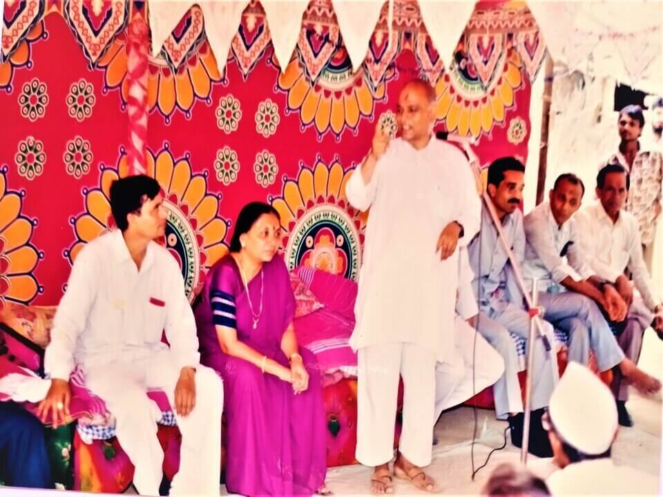
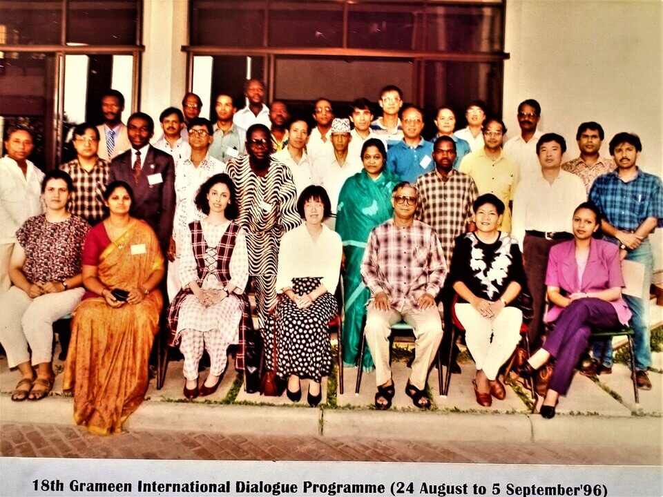
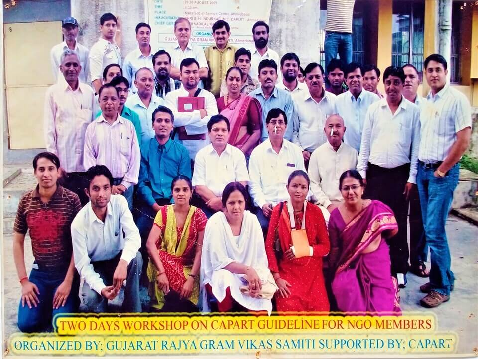
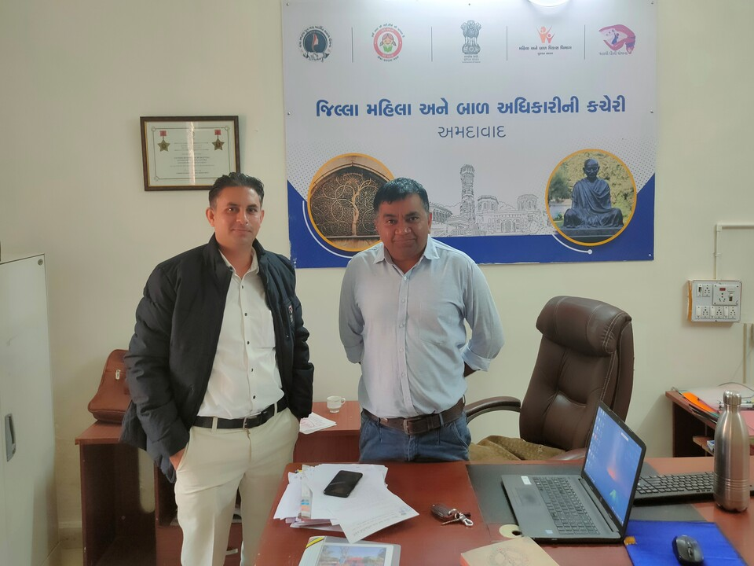
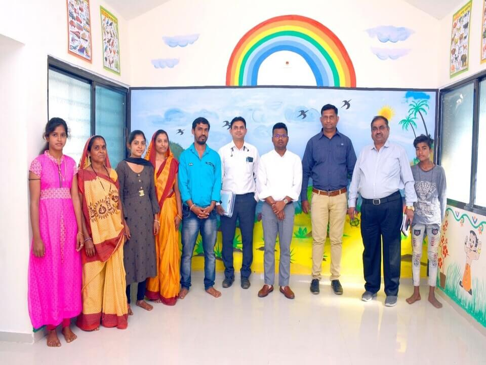
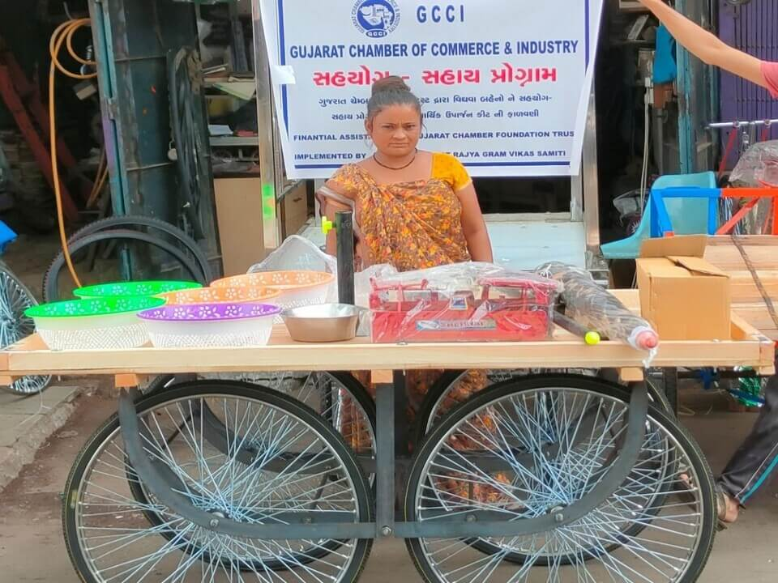
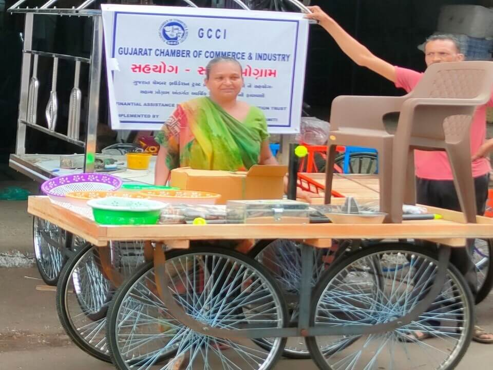
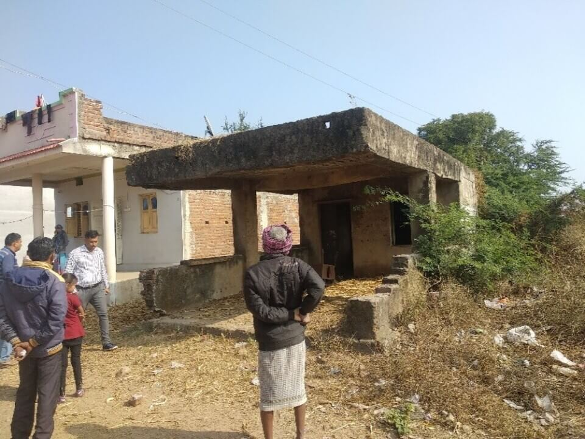
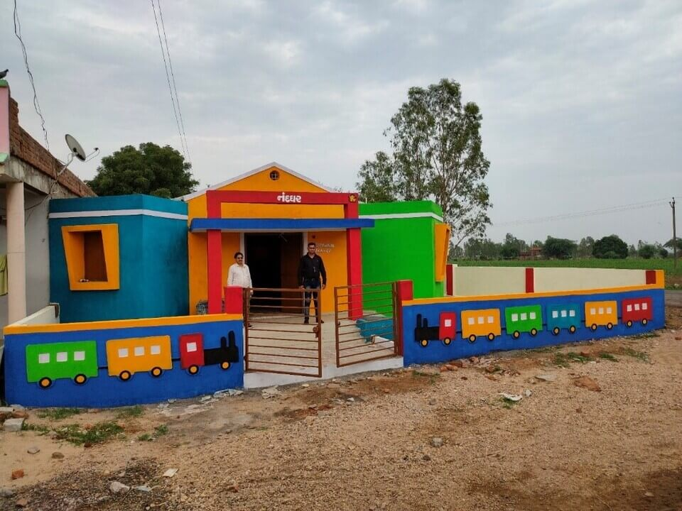
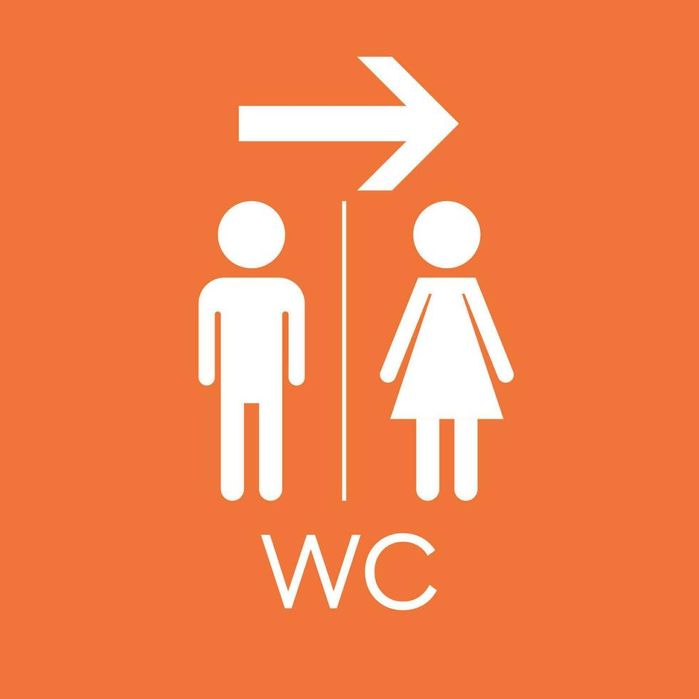

Our Founder with Shri Narendra Modiji






Modern Anganwadi Center at Aspirational District Dahod
Gujarat Rajya Gram Vikas Samiti is a Public Trust (NGO) serving since 1988. GRGVS has FCRA, CSR 1, 12AA, 80G certifications. It is registered under Bombay Public Trust Act, 1950 and Societies Registration Act, 1860. GRGVS has registrations with Niti Aaayog and has partnered with various Government Organizations and companies.
Gujarat Rajya Gram Vikas Samiti (GRGVS)’s areas of operation comprises of all districts of Gujarat State. GRGVS has undertaken various activities/projects for rural infrastructure development, drinking water, sanitation, environment awareness, irrigation, rainwater harvesting, women empowerment, education, sustainable development, livelihood schemes and relief works. GRGVS has carried out various Corporate Social Responsibility - CSR projects also.










Chose us as Your Trusted Partner
In association with ICDS
Our work in Rural Development
Our Education Initiatives
Empowering Women & Children
Our Journey Towards a Swachh Bharat (WASH)
Our Holistic Approach to Drinking Water, Conservation & Recharge
Through Tree Plantation & Agri. Initiatives
Empowering Rural Communities with Solar Energy (SSL, Roof Top Solar etc.)

Installing Clay Nests & Providing Water for Birds Small actions at home can help protect sparrows and other urban birds. Installing clay nests and keeping water bowls during summer creates safe spaces for birds to rest, drink, and raise their young. 1. How to Install a Clay Sparrow Nest Ideal...
Read MoreAhmedabad, September 2025 – In a landmark initiative, Gujarat Rajya Gram Vikas Samiti (GRGVS) — a 36-year-old NGO dedicated to environmental and community development — planted 100 trees at the Urban Forest, Makarba, Ahmedabad (📍 Google Maps Location) to celebrate the 3rd birthday of little Sarah. This initiative makes Sarah...
Read MoreHappy World Environment Day (June 5th)! Gujarat Rajya Gram Vikas Samiti is proud to celebrate by highlighting our commitment to a greener future. We've surpassed 1 lakh trees planted and continue supporting rainwater harvesting projects. A huge thank you to our incredible supporters, Government, and CSR corporations for being part...
Read More
Gujarat Rajya Gram Vikas Samiti (GRGVS) is proud to inform that we're managing the Ahmedabad Municipal Corporation's (AMC) Shelters for Urban Homeless (SUH), in close collaboration with the Urban Community Development Department (UCD) and supported by the Deendayal Antyodaya Yojana – National Urban Livelihoods Mission (DAY-NULM)!Our mission is to provide...
Read More
As representative of Gujarat Rajya Gram Vikas Samiti, I have the privilege of witnessing firsthand the impact of charitable initiatives that uplift lives. On February 21st, 2024, I had the honor of attending the inauguration of the "Charity Mission for Corrective Surgery" at Health & Care Foundation at Indukaka Ipcowala...
Read More
Respected Sir/Madam On behalf of our NGO, I'm thrilled to invite you to join the 22nd Annual TTEC Wellness Walk in Ahmedabad on Sunday, February 18th, 2024. This event promises a fun and meaningful way to walk for a cause, connect with colleagues, and make a positive impact. Why join?...
Read More"I am proud to support Gujarat Rajya Gram Vikas Samiti and their vital work, and I have no doubt that they will continue to make a meaningful difference in the years to come."
ONGC
"I have had the privilege of working with Gujarat Rajya Gram Vikas Samiti for several years now, and I can confidently say that they are making a real difference in the lives of those they serve. Their dedication to their mission is unwavering!"
Sarpanch, Fatepura
"I am so grateful for the new Anganwadi center that Gujarat Rajya Gram Vikas Samiti recently constructed in our community. The quality of the construction is top-notch, and it is clear that great care and attention were given to every detail."
Dasla Village, Dahod
Looking for volunteering opportunities or an internship program in the development sector? Gujarat Rajya Gram Vikas Samiti offers a range of opportunities to individuals and companies who want to make a positive impact on rural communities in Gujarat.
Become a Volunteer